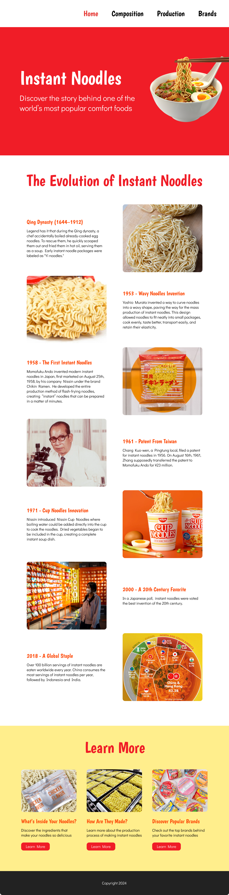
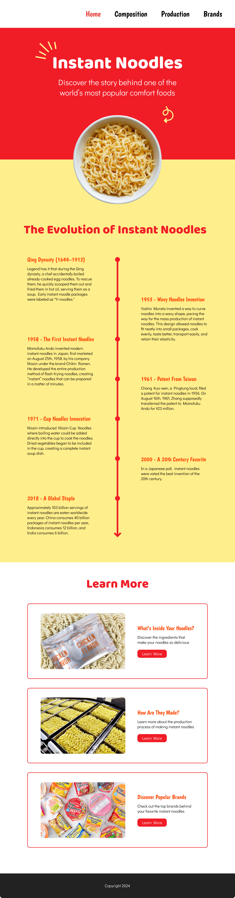

Background
In my Interaction Foundations course, I partnered with a classmate in a creative director-designer workflow to build a responsive website from scratch using HTML and CSS in Visual Studio Code. As the designer, I translated the initial concept into a cohesive visual system and a scrollable narrative about instant noodles.
Challenge
Turn a loose concept into a story-driven site that feels polished and easy to navigate. Then implement it cleanly in HTML/CSS and ensure it works smoothly across screen sizes.
Objective
Design and ship a responsive website that showcases the history and cultural impact of instant noodles through clear hierarchy, strong typography, and interactive layouts.
My Approach
- Creative Direction Alignment: translated the initial concept into a clear page structure and visual plan
- Information Architecture: organized content into a simple story arc optimized for scrolling and skimming
- Visual Design System: developed a cohesive identity inspired by colorful ramen packaging (color, type, components)
- Mockups: created two distinct design directions to explore different layouts
- Critique & Iteration: reviewed options with my creative director, chose one, and refined it through weekly feedback
- Build Website: implemented the final design in HTML/CSS, translating components and layout into reusable styles
- Responsive Design: refined breakpoints and flexible layouts to preserve hierarchy and readability on mobile
Mockups A & B

